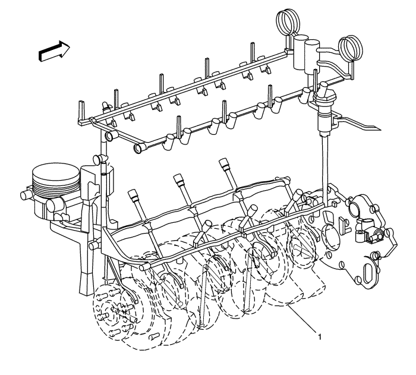

Descripción de la lubricación

Se aplica aceite a presión al cigüeñal (1), las varillas de unión, el conjunto de barra estabilizadora, las superficies de cojinete de árbol de levas, compensadores del juego de válvulas y tensor hidráulico de cadena de distribución. Todas las partes móviles se lubrican mediante flujo por gravedad o salpicadura. El aceite entra a la bomba de aceite tipo gerotor a través de una malla filtrante de admisión fija. La bomba de aceite es accionada por el cigüeñal El cuerpo de la bomba de aceite está dentro de la cubierta delantera del motor. El aceite a presión de la bomba atraviesa el filtro de aceite. El filtro de aceite está situado en el lado derecho (delantero) del bloque del motor. El filtro de aceite se aloja en una moldura integrada en el bloque del motor El filtro de aceite es de tipo cartucho desechable. Una válvula de derivación en la caperuza del filtro permite un flujo de aceite flexible si se obstruyera el filtro de aceite. Después, el aceite entra al conducto de reparto en el que se distribuye a las barras estabilizadoras, el cigüeñal, los árboles de levas y el inyector de aceite de cadena de distribución de árbol de levas. Los cojinetes de la varilla de unión se engrasan mediante el paso constante de aceite por el cigüeñal que conecta los muñones principales a los muñones de la varilla. Una ranura alrededor de cada uno de los cojinetes de bancada superiores proporciona aceite a los pasos perforados del cigüeñal. El aceite a presión pasa a través del orificio restringido de la culata del cilindro a la culata del cilindro, y después a cada galería de alimentación del árbol de levas. Los pasos realizados por fundición alimentan a los compensadores hidráulicos y los pasos perforados alimentan las superficies de cojinete de árbol de levas. En el extremo se instala un sensor o interruptor de presión del aceite. El aceite regresa al cárter del aceite a través de pasos de fundición en la culata. La lubricación de la cadena de distribución se vacía directamente en el cárter del aceite.
| © Copyright Chevrolet Europe. All rights reserved |